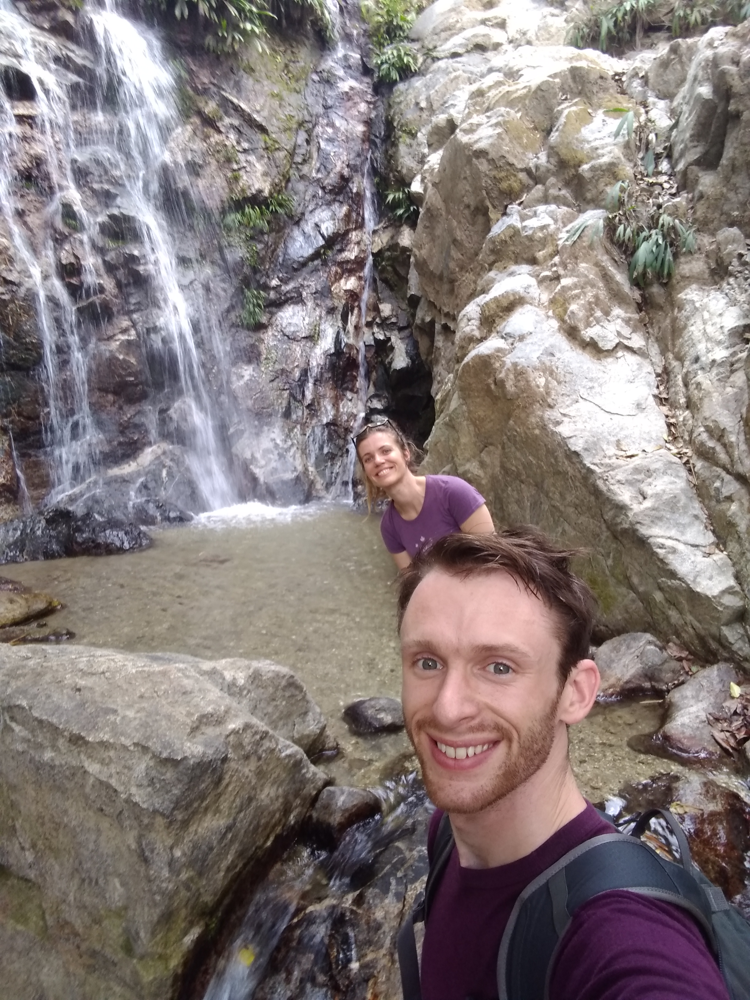
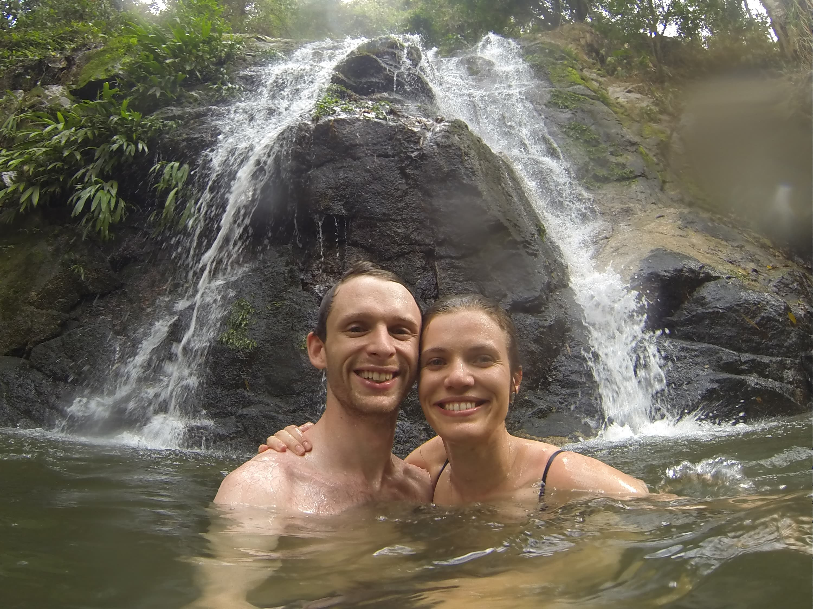
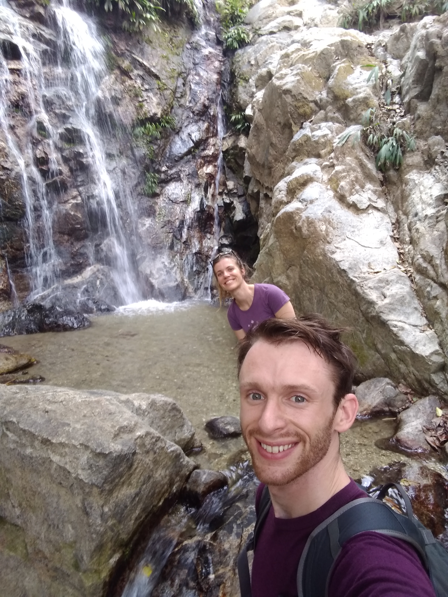
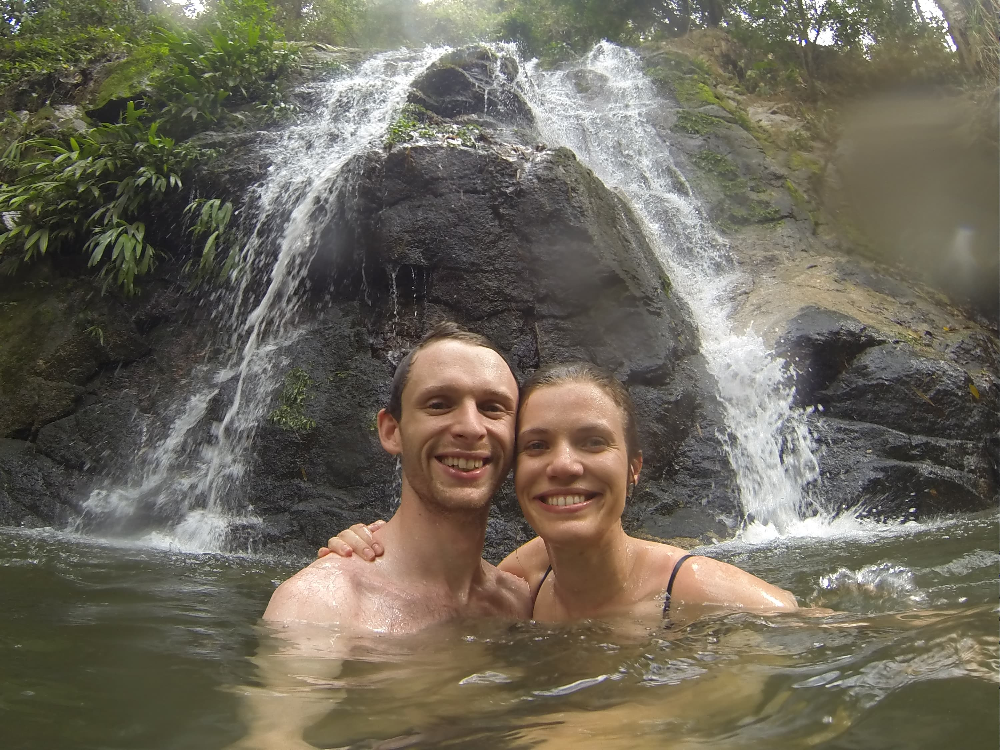
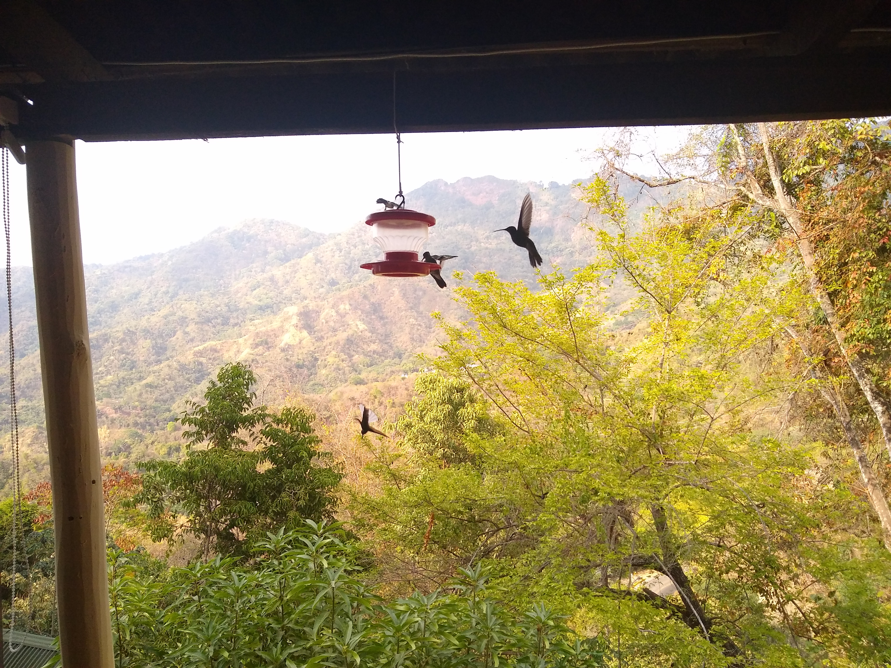
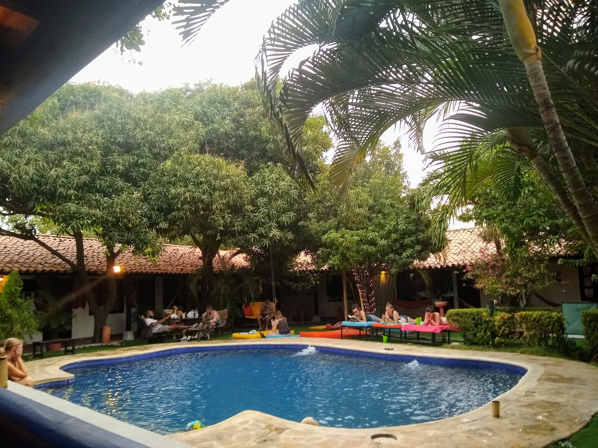
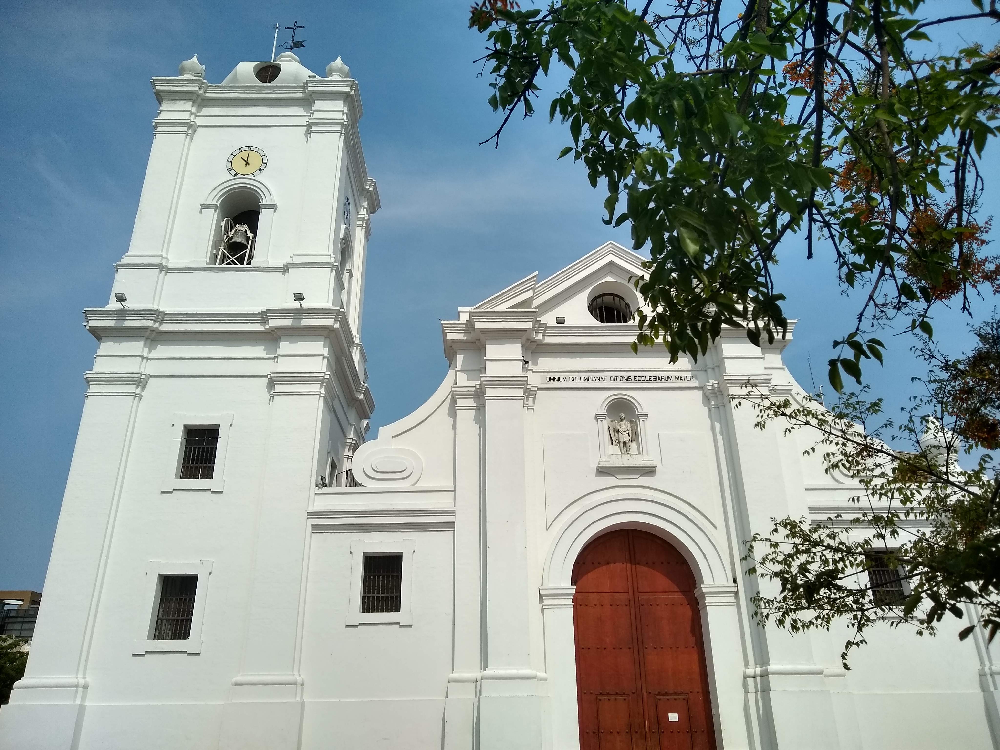
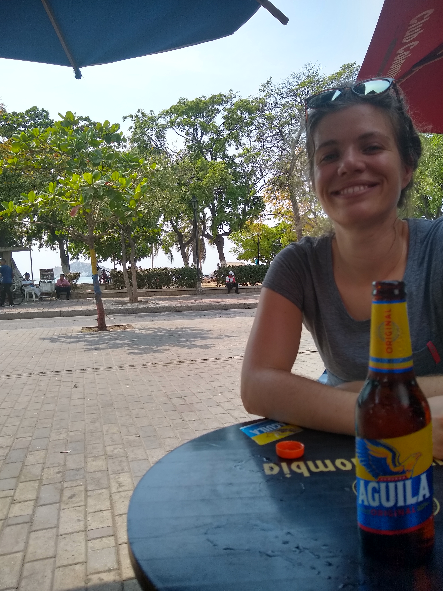
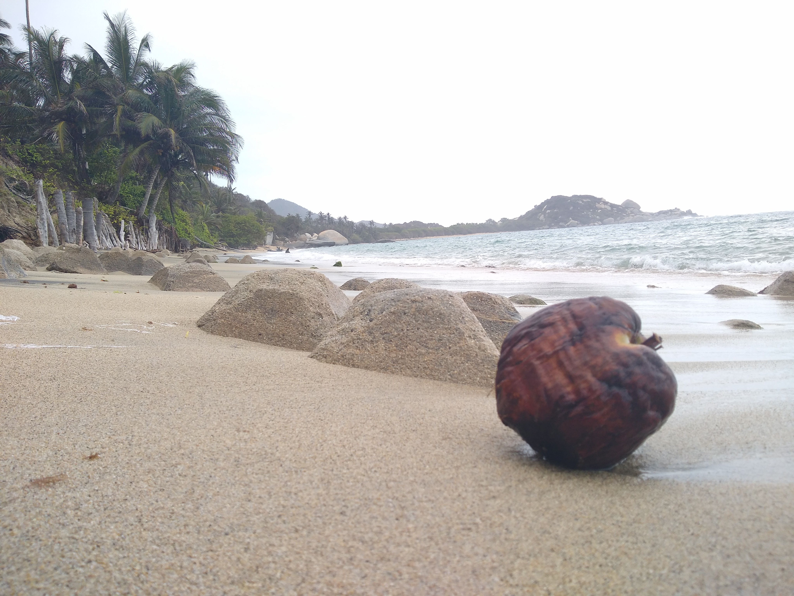
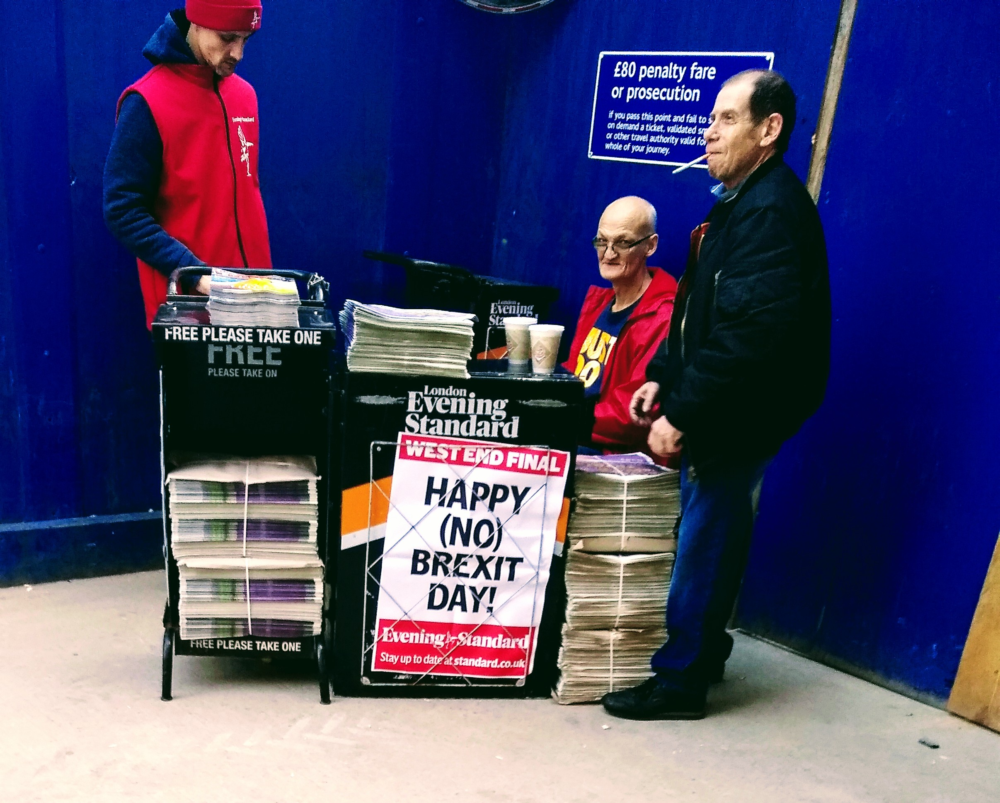

Go Charlotte, it's your birthday
The 3rd April was Charlotte's 30th birthday. Shout out to everyone who sent cards (and bunting) with me for the trip - it made for a great birthday morning:

We headed up into the mountains of the Sierra Nevada into the jungle town of Minca the night before to stay in an “Ecohab” - picture below for context - as a birthday treat. It was absolutely stunning, with sweeping views across the luscious green jungle and hummingbirds flitting around the hammocks on our balcony.

After cards and presents, we set off on a motorbike tour of the surrounding area. First stop was the Pozo Azul waterfall, where it seemed that most of Colombia (but no other foreigners) had had the same idea to take a dip in the cool, if not actually blue, water to beat the heat.
Next up was La Victoria coffee plantation. If I'm honest, I'd never given much thought to how coffee is produced so the tour of the facility was fascinating. La Victoria was started by a few engineers from Europe who had come to Santa Marta to build the railway there. They planted an objectively large crop of coffee plants and so - as engineers would - set about building bespoke machinery to process the coffee from fruit to dried bean ready for export. The entire process is powered by the naturally cascading mountain water, which is channelled to drive beans through pipes that transport and sort them by quality as well as turning water wheels that move the machinery. To this day they use the original equipment so the entire place looks like a working museum.

Interestingly, due to the many stages in the trade and production of coffee, La Victoria have zero visibility of where their product ends up, save for the very small amount that they roast and grind on site, which was truly delicious.
After riding up to a viewpoint where we sampled the local “puma rosa” fruit that our guides knocked down from a nearby tree, we joined them for an authentic Colombian lunch. This was served at an establishment that I honestly think might just have been a local woman's kitchen. It consisted of a delicious meat and lentil soup followed by spiced grilled pork with beans, rice and potatoes with a fruit drink; all for the princely sum of 10,000 Colombianos (around £2.40 at the time of writing). It is still by far the best meal I've eaten on our trip.
On the way back down we stopped briefly at a hostel with giant hammocks and another cracking view (and beer) before stopping at our second, much more idyllic waterfall for another swim.
 



The ride back into Minca would have been uneventful since we'd gotten used to the undulating and unforgiving dirt track roads by this point. This was up until the point we ground to a startling halt in front of a 3ft snake in the middle of the road. He signalled to wait until it had moved off before we should attempt to pass. When I asked him what type of snake it was, he was only able to confirm vehemently that it was “peligroso” - dangerous.
In the evening we retired to our idyllic lodgings to watch the sunset and the birds. Needless to say our standard of accommodation can only go down from here…

Bienvenido a Colombia
So we've arrived in South America! Specifically, Bogotá El Dorado international airport, Colombia, on Saturday afternoon. Given the 4am start in the UK and the 14hrs of travel, we very much crashed out on arrival!
The following morning we began proper, hopping on another flight to Santa Marta on the Caribbean coast. We stayed in an incredibly chilled out hostel called The Dreamer, which caters to backpackers who want sun, a pool and beer served all day and night...

Our first afternoon there we bussed into town. Bus drivers in Colombia are masters of multitasking - simultaneously weaving through traffic, collecting fares, distributing change, paying the bloke washing the windscreen and buying bottled water through the cab window. From the seat behind, Charlotte's job was to pass change to those retreating for seats to avoid being knocked for 6 by the next gear change.
The beach front of Santa Marta is somewhat blighted by the enormous shipping port in the backdrop, but was a great place to people-watch with a cold drink and turn down various offers of “sunglasses” - every vendor seemed to have only 1 sunglasses case which was filled with drugs - and to absorb the colour and the Latin music blaring from every taverna and street seller. The old town had an air of its colonial past (nice basilica, pictured below) but felt weathered by tourism. Santa Marta is where the Colombians come to holiday.


The next day we headed for the Tayrona national park to see some less commercialised coast reached through the jungle. The park is massive - our hike in from the entry gate was one of the shorter routes available at a humid 2 hours, after which the cool water of the sea and lunch of fresh avocado really took the edge off.

On the trek back we met up with a couple of Canadians who we'd met on the morning and hit Attenborough mode; we clocked an Agouti (think 2ft-long guinea pig - bugger to photograph), some woodpeckers and 3 different varieties of monkey (which the Canadians were super excited about). You can play spot the monkey on the photo below!

That is sadly the best one I got…
Next stop (and next post) will be from Minca in the mountains above Santa Marta
29th March 2019 - So it begins…
I'm writing this first post from the train to Kew Gardens - not technically a stop on the travel route yet, but a useful place to stay overnight to be near to Heathrow for tomorrow's 07:35 to Bogotá (thanks Lucy for the bed!).
Today Charlotte and I both finished work for the next 6 months. I've handed in my work pass and laptop and it's finally hit home that we're leaving. I'll remember this day for the Evening Standard headline that greeted me on the way out of the tube at Moorgate, pictured below.
That is the first and last reference I will make to the B word in this blog series.
So first stop, Colombia! We're on the way, it's finally happening. The next post here will be coming at you from South America. Stay tuned!
Simon xxx
